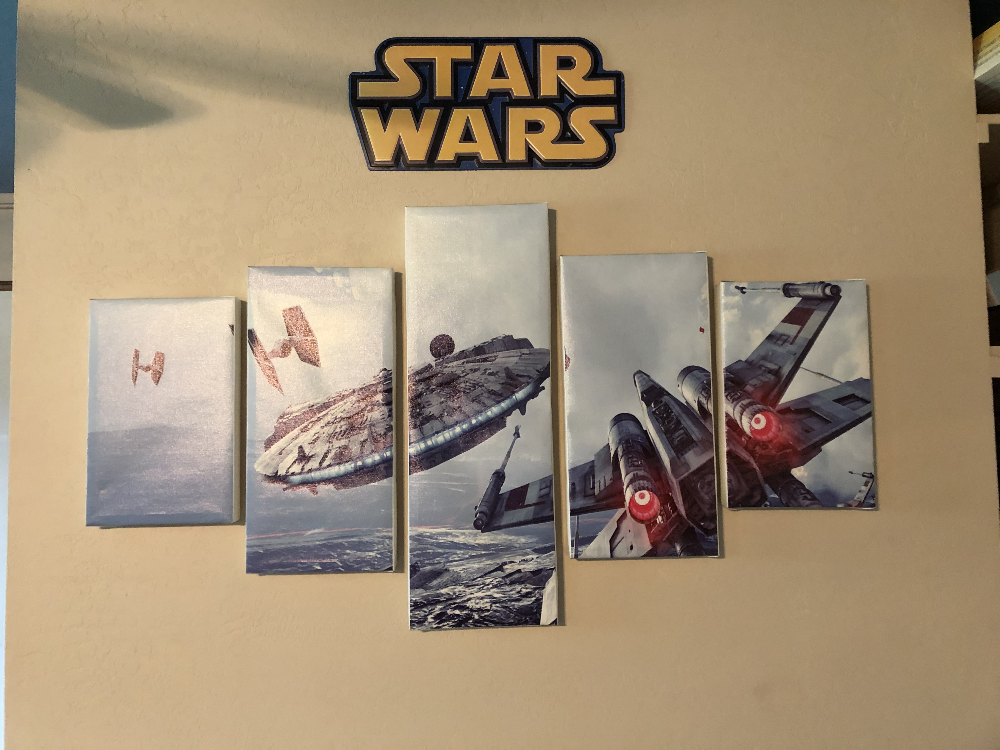
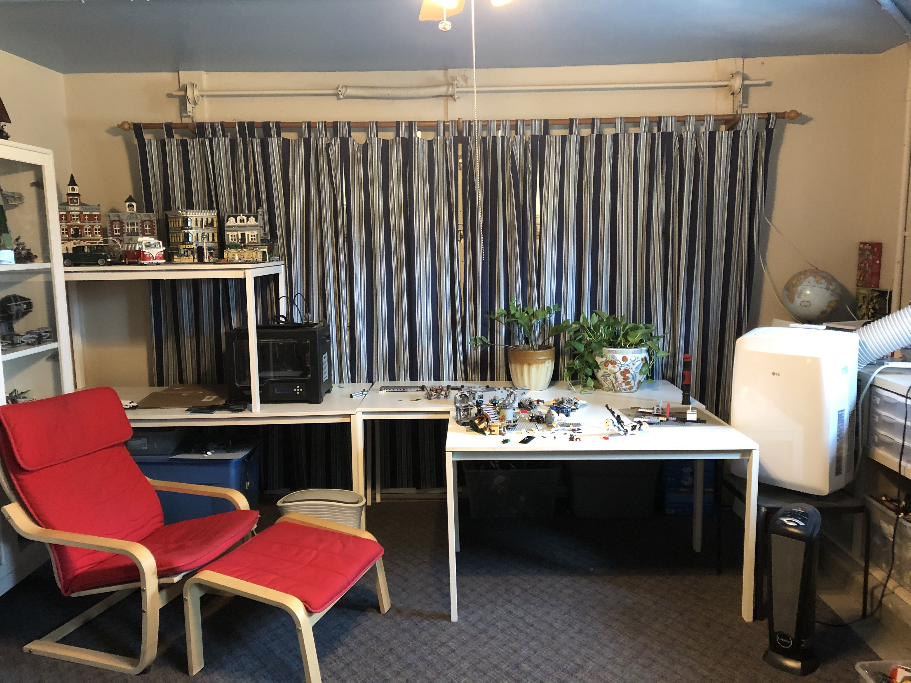
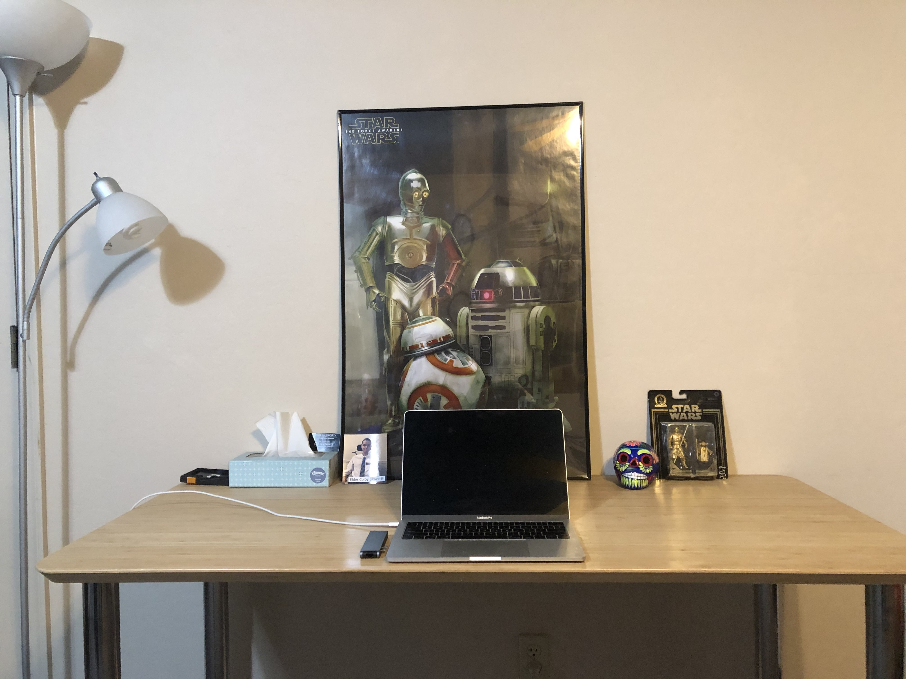
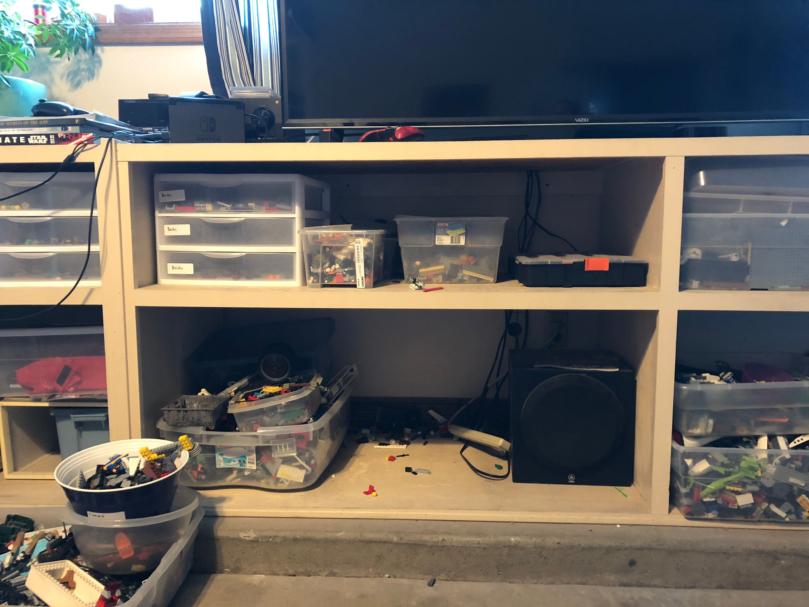
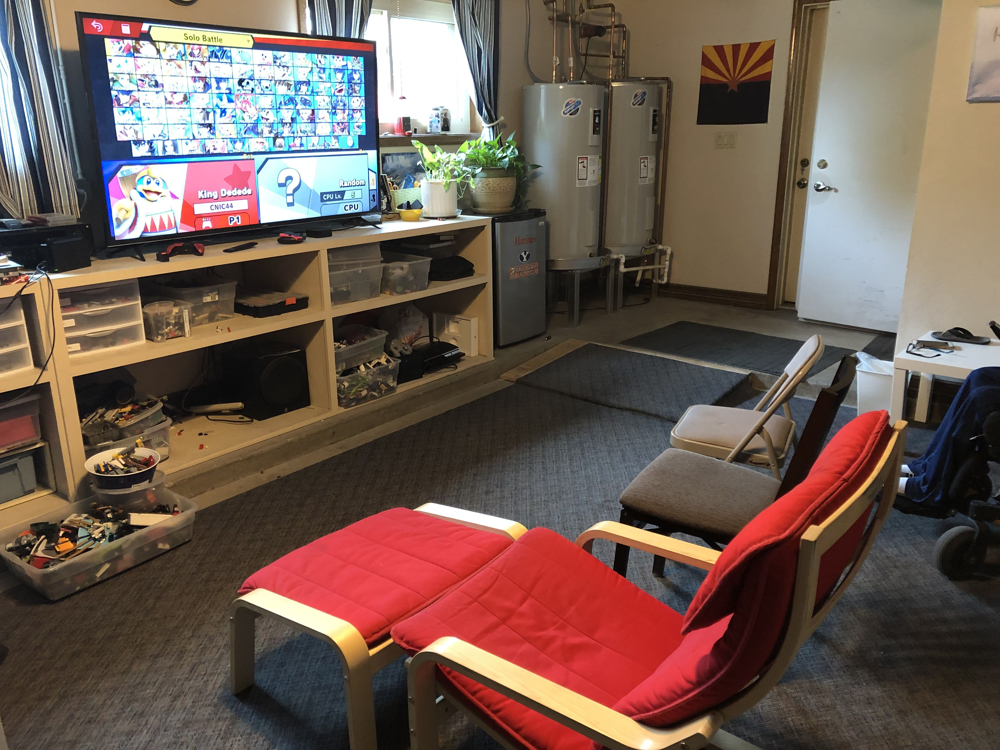
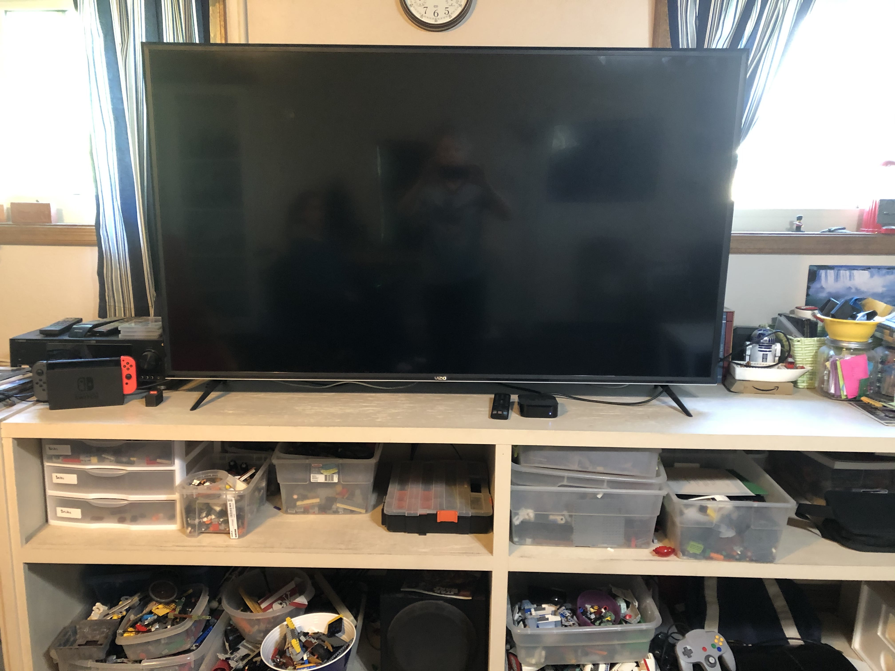
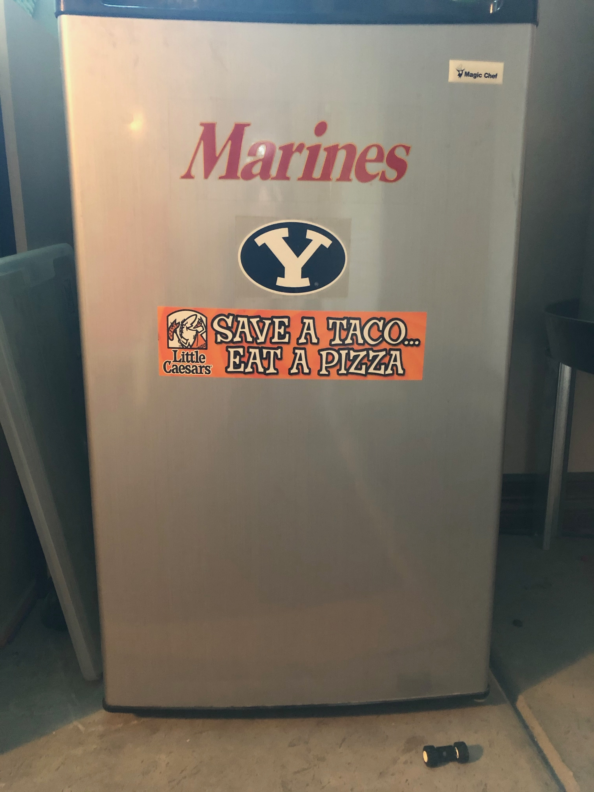
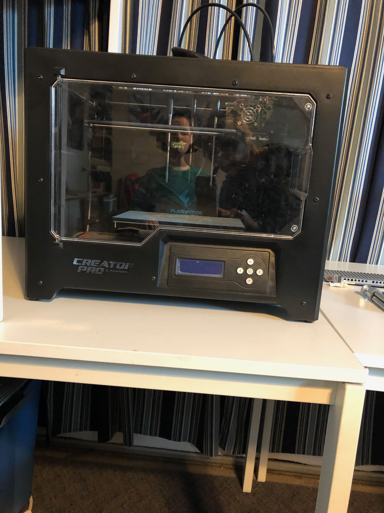
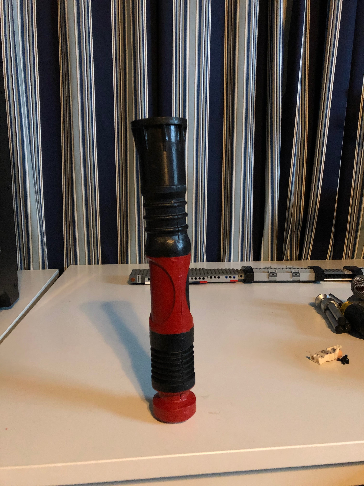

About The Mancave
The Mancave was officially made in 2009, and it has gone through many changes. Before my parents decided to create the room, me and my twin brother Cade had reached the point in our progressive muscle disease where we struggled to walk. 2009 was the year I was confined to a power wheelchair, and as our LEGO collection resided on the second floor of our house (our favorite hobby at the time), change was needed. Options we discussed included installing an elevator in our house to get upstairs, or converting a room into a new LEGO space. Of course, the elevator option was much more expensive, and the unused second garage of our house was the perfect place to convert. Let's just say it was a difficult process, but my family members and others were determined to make it work. Designed to be a "LEGO room" for us at 9 years old, it was built solely for the purpose of having fun. And the room has been just that and more, and I can't even fathom the amount of time I've spent in the Mancave. Throughout the past 11 years, the room has not only held an extensive LEGO collection, but become a video game space, a place to watch TV, a place to enjoy a popcorn machine, mini fridge with drinks, and a jelly bean machine, a place to 3D print, and a place to do homework. I have many great memories of playing video games and watching movies with friends, building LEGOs, playing with my brother in the first years of the Mancave, and having many fun conversations in the last few years. I am very thankful that the Mancave even exists, and for the time and effort my family and many others put into making it a reality.
Contents of The Mancave
The ceiling, which is painted blue with white highlights. It has been this way for the Mancave's whole lifetime so it would look like a cloudy sky.

The walls are a more neutral color and have posters on them, and until last year one of the walls had wallpaper of a tropical beach scene on it. The back wall, which is still a garage door, is covered with a blue curtain to hide the garage appearance.

My Desk, which is where I do my online homework and make videos (a hobby that I occasionally do). Eventually I plan to get a desktop computer, since the laptop isn't very powerful.

The LEGO collection, which is the reason for the Mancave even existing. The display shelves, storage boxes, sorting containers, and LEGOs all around the room are all part of the collection. It is covered in detail on the Collection page.

The Video Game collection, which has grown and migrated into the Mancave in recent years. It's also covered on the Collection page.

The TV, which is a 60-inch that makes movie nights and video games so much better. I have an Apple TV and a Nintendo Switch hooked up to it, and it's in a perfect spot on top of the storage shelves between the windows.

The mini fridge, which the 9-year-old me thought was very important for a good Mancave. The fridge has been great to have in the room for all 11 years, and I use it to store soda, Gatorade, and other cold drinks. Of course, it has been properly decorated.

The 3D Printer, which was gifted to me and my brother a few years ago. My brother Cade is the one who knows how to use it and installed the software on his computer, and we have made some cool things. The 3D printer is also a great talking point with friends, and this lightsaber hilt is just one of the things we've printed.

